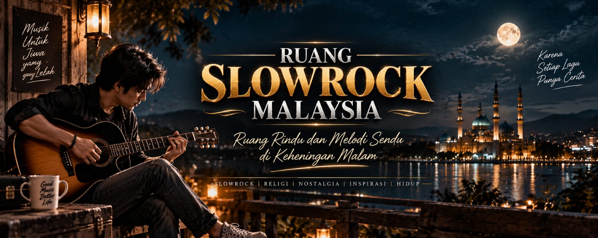

Rindu yang tenang
Ada lagu yang tidak meminta kita melupakan. Ia hanya duduk menemani, sampai hati terasa sedikit lebih lapang.
Salam dari Malaysia
Nikmati melodi yang pernah menemani, lirik yang masih tinggal, dan nuansa slow rock Malaysia dalam satu ruang sederhana.

RUANG RINDU
MELODI SENDU
Ruang Slowrock Malaysia hadir untuk kamu yang percaya bahwa musik bukan sekadar bunyi. Ia adalah perjalanan pulang, teman di malam yang panjang, dan potongan cerita yang tak lekang.
Temukan koleksi lagu slow rock Malaysia dan biarkan setiap nada membawa kamu pada momen yang ingin dikenang.
Ada lagu yang tidak meminta kita melupakan. Ia hanya duduk menemani, sampai hati terasa sedikit lebih lapang.
Ketika kota mulai sunyi, gitar dan suara lama menjadi teman perjalanan yang paling jujur.
Satu intro bisa membawa kita kembali ke tempat, wajah, dan cerita yang pernah berarti.
Koleksi utama
Masuk ke kanal YouTube Ruang Slowrock Malaysia dan temukan soundtrack untuk perjalananmu hari ini.
Buka kanal YouTube